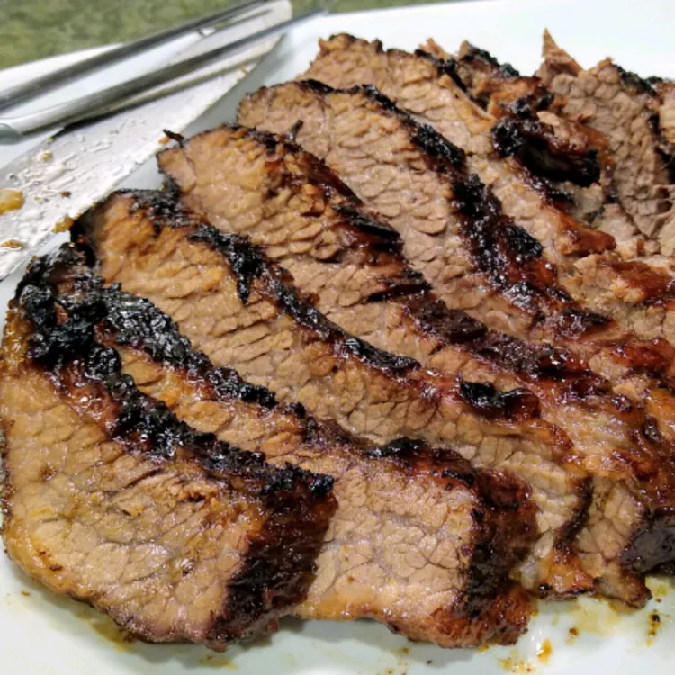

Oklahoma Brisket

Description
Expertly smoked beef brisket is a thing of beauty. The relaxed slices of smokey, tender beef almost melt in your mouth.
The burnt ends are one of the best bites in barbecue. If possible, trim, inject and season the brisket
12 hours before smoking, keeping it refrigerated.
Ingredients
- 1 (5 pound) beef brisket
- Seasoned salt to taste
- 1 cup apple cider
- 1/2 cup honey
- 3 tablespoons soy sauce
- 3/4 cup ketchup
- 1/4 cup packed brown sugar
- 2 tablespoons Worcestershire sauce
- 1/4 cup apple cider vinegar
- 1/2 teaspoon garlic powder, or to taste
Steps
-
Preheat the oven to 300 degrees F (150 degrees C). Season brisket all over with seasoned salts, and place in a roasting
pan. Pour apple cider over brisket and cover tightly with foil.
-
Roast brisket in the preheated oven until tender, about 3 hours. Don't peek.
-
Prepare a grill for low heat. Mix honey, soy sauce, and seasoned salt to taste in a small bowl.
-
Remove brisket from the oven and place on the preheated grill. Grill, turning frequently while basting with honey sauce,
about 30 minutes
-
Meanwhile, make the BBQ sauce. In a saucepan over low heat, combine ketchup, sugar, Worcestershire sauce, vinegar,
garlic powder, and seasoned salt to taste. Cook, stirring over low heat until flavors meld, about 15 minutes.
Do not boil, or BBQ sauce will be too vinegary.
-
Let brisket rest for about 10 minutes after it comes of the grill. Slice and serve with BBQ sauce.
Back to main page